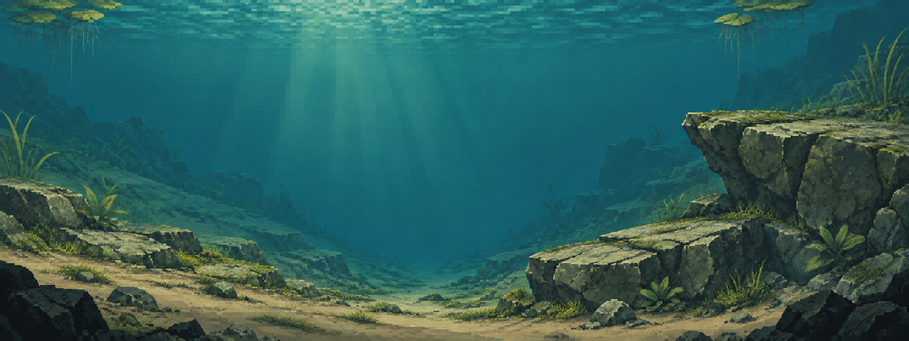

NATURAL POND SERIES / M01 · SELECTED B / ROUND 02
岩缝长藻，坡脚成丛，沟底留白。
沿用你选中的右岩棚与偏心沟谷。岩缝苔藻、坡脚矮草、少量宽叶水草和两侧高草形成稀疏群落，保持石质池湾的开阔感。

同构图前后比较


两幅是 2048×768 静态美术图，不是游戏截图。植物尚未拆成独立图层，也没有碰撞、减速或缠线能力；中央空间经过视觉观察，未做真实鱼线/食物/HUD 验收。
当前仅完成第二轮。下一轮再增加独立装饰动物；之后逐图整理背景、前景与真实目标适配关系。